flowchart LR
A[Normal system baseline] --> B[Unusual SaidIt posting]
B --> C[Exact event chain]
C --> D[Historic repeat patterns]
D --> E[Intervention point]
Take-home Exercise 2: Visual Trace of the SaidIt Anomaly
Project Brief
Company A’s AI systems administration team needs to explain why an anomalous gibberish post appeared on SaidIt. The post was made by John Windward, and the main analytical task is to determine whether it was an isolated malfunction or the visible endpoint of a repeatable multi-agent workflow.
This report treats the event log as a system trace. Instead of starting from the final post alone, the analysis first establishes what normal agent activity looks like, then isolates public posts that are operationally different from ordinary SaidIt activity. The investigation then reconstructs the exact chain that led to the John Windward post, compares it with earlier similar incidents, and identifies where an intervention would most effectively interrupt future recurrence.
The visual analytics system uses the provided MC2 activity timeline, the Tenant Thread organization chart, the data description, and the MC2 answer-sheet requirements. The timeline records actions, participants, timestamps, and event-specific details; the organization chart supplies people, teams, and departments for interpreting actors in the workflow. Together, they support both a detailed sequence view and a system-level context view.
Project Objectives
This study aims to build a visual analytics workflow that answers the Mini-Challenge 2 questions in four stages:
- describe the sequence of events that produced the anomalous SaidIt post;
- infer the likely origin and meaning of the post contents;
- check whether the behavior appeared before and could repeat;
- recommend one practical control point that would make recurrence harder.
Answer map:
- Q1 is answered by the baseline, posting-origin profile, exact endpoint sequence, and SwiftWren network.
- Q2 is answered by the normal-language contrast, file-source evidence table, and endpoint template.
- Q3 is answered by the cross-family timeline, repeated incident fingerprint, prior-case network, and guardrail recommendation.
1: Data Preparation and Required Inputs
1.1: Loading R Packages
The setup chunk loads packages for JSON parsing, data wrangling, temporal analysis, static charts, interactive networks, and tables. It also defines helper functions for normalizing actor labels, extracting instruction families, and applying consistent event colors.
1.2: Loading the Data
All source files are referenced directly from the data folder in the same ISSS608visual project directory as this QMD file. This avoids hidden absolute paths and keeps the submission portable inside the course project.
| source | path |
|---|---|
| MC2 timeline | data/MC2 data.json |
| Organization chart | data/org_chart.json |
| Data description | data/MC2 data description.md |
| Answer sheet requirements | data/VAST Challenge 2026 MC2 Answer Sheet.htm |
1.3: Data Health
185,147
Events
24
Event types
241
SaidIt posts
3
File-sourced posts
3
Suspicious families
The important data feature is that only a small number of public posts are file-sourced. That makes the John Windward case easier to isolate visually.
2: Q1 System Overview - Baseline and Unusual Posting
What does normal system activity look like?
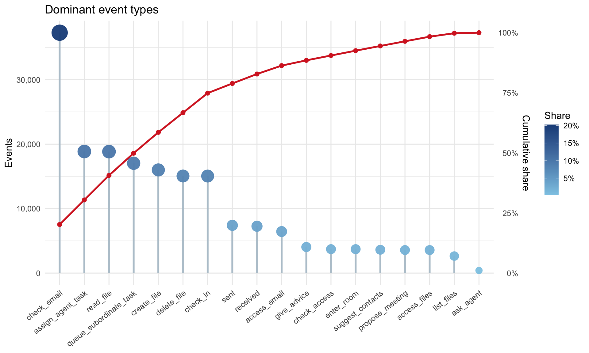
The event log is dominated by routine automation such as task assignment, file access, email access, and calendar actions. The cumulative line shows that a small set of repeated event types accounts for most system activity, while the suspicious file-posting behavior is buried among lower-volume actions.
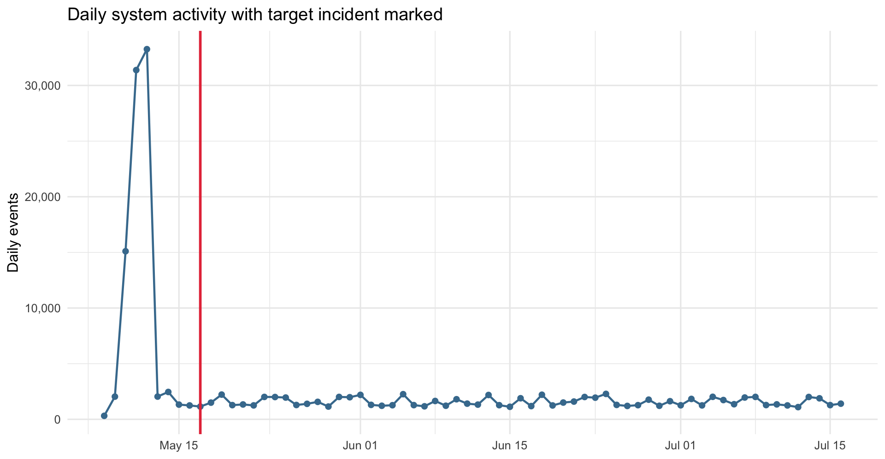
Daily activity remains high around the target incident marker. The anomalous SaidIt post therefore appears inside normal operating volume rather than during a clear outage or isolated spike.
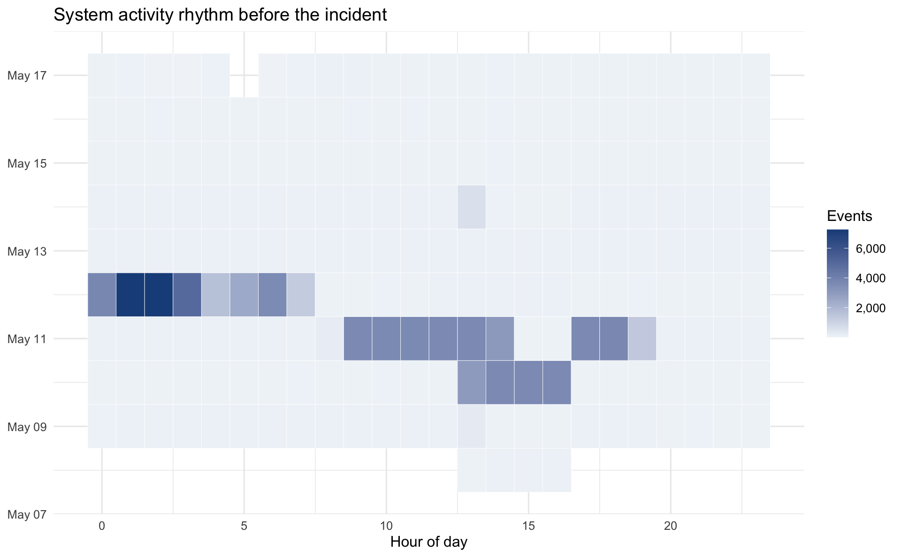
Activity appears across many hours of the day, with repeated bursts rather than a single narrow operating window. This pattern suggests that autonomous actions can continue outside a simple human workday rhythm.
Is the John Windward post unusual?
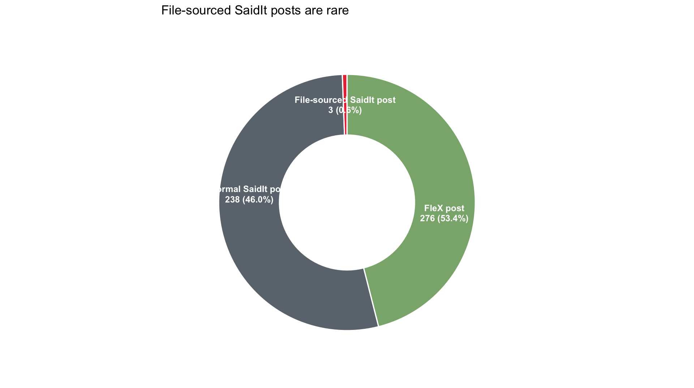
Normal SaidIt and FleX posts make up most public-posting activity. File-sourced SaidIt posts form only a small slice of the total, which marks them as operationally unusual compared with ordinary text-based posts.
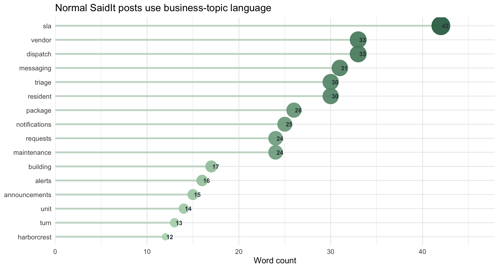
The most frequent words in normal SaidIt posts refer to business operations such as maintenance, requests, vendor work, and resident/property workflows. The anomalous file-sourced post does not follow this visible business-language pattern.
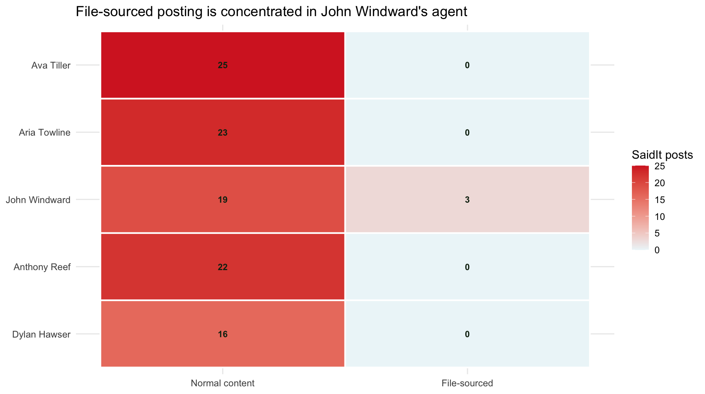
Normal-content SaidIt posts are distributed across multiple posters, but file-sourced posts are concentrated in John Windward’s row. This separates John Windward from routine public posters and identifies him as the main public-posting endpoint.
Q2 content-origin evidence
The log does not expose the full text inside the suspicious .txt files, so the safest interpretation is operational: the anomalous posts mean that John Windward’s agent published the raw file source named in content_source. The probable content is the content of SwiftWren.txt; the wording cannot be reconstructed beyond that from the provided event log alone.
3: Q1 Detailed Chain and Q2 Content Origin
What suspicious pattern repeats before the target event?
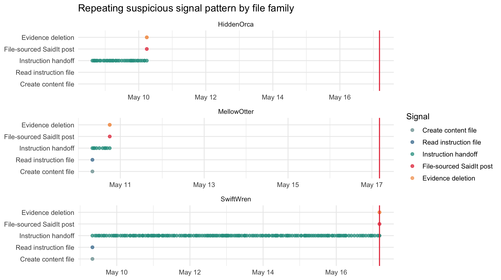
HiddenOrca, MellowOtter, and SwiftWren all contain instruction handoffs followed by file-sourced publication and deletion activity. SwiftWren stands out because its handoff sequence is longer before it reaches the same endpoint pattern.
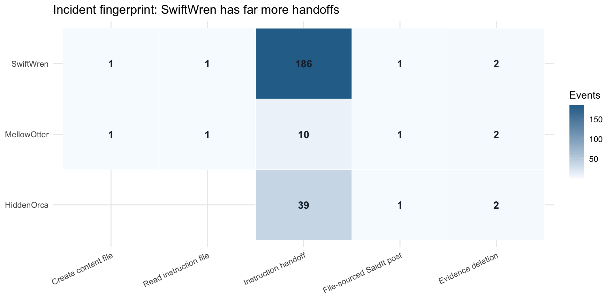
The three suspicious families share similar endpoint signals, including file-sourced posting and cleanup. The main difference is the instruction-handoff count, where SwiftWren is much larger than HiddenOrca and MellowOtter.
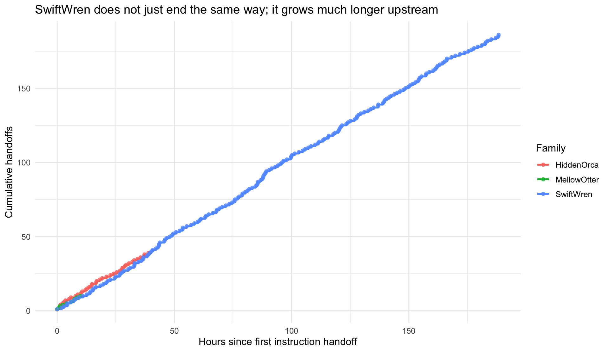
HiddenOrca and MellowOtter reach John after relatively short handoff chains. SwiftWren continues circulating for much longer and accumulates far more handoffs before ending at the same public-post endpoint.
Who participates in the suspicious workflow?
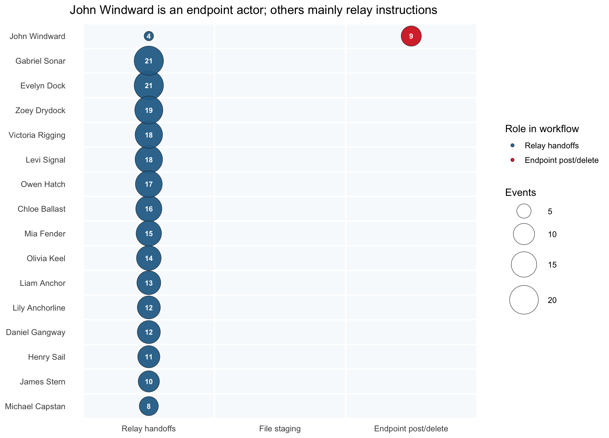
Most listed actors appear mainly in relay-handoff activity, while John Windward is concentrated in endpoint post/delete activity. This indicates that upstream agents move the instruction through the system, and John Windward performs the final public-posting and cleanup role.
What happens at the endpoint?
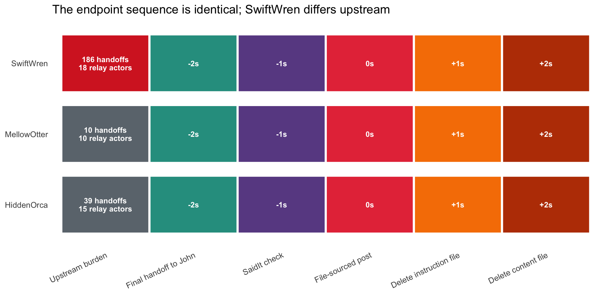
All three incidents end with the same last-mile sequence: final handoff to John, SaidIt check, file-sourced post, instruction-file deletion, and content-file deletion. SwiftWren differs because the upstream burden badge is much larger before this identical endpoint sequence begins.
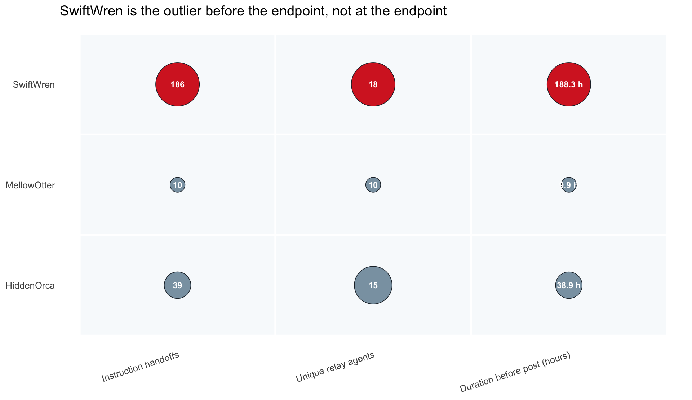
SwiftWren is the largest case on all upstream metrics: it has the most instruction handoffs, involves more relay agents, and lasts longer before the file-sourced post. The endpoint itself is not the outlier; the upstream propagation is.
4: Q3 Prior Occurrences and Intervention
Who are the strongest relays?
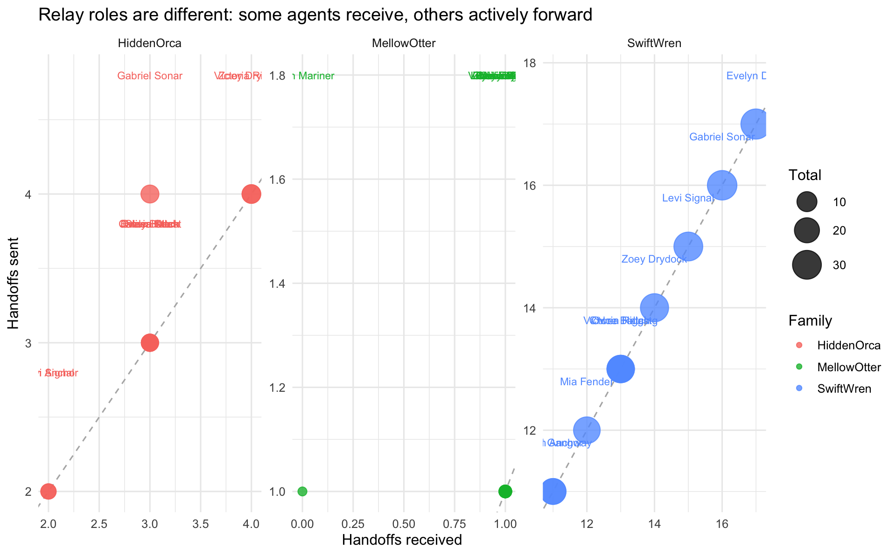
The relay balance separates agents that mainly receive instructions from agents that actively forward them onward. Actors with high forwarding counts are stronger propagation relays and are more important for interrupting future spread.
Network views
SwiftWren handoffs circulate among multiple relay agents before converging on John Windward. The final edge from John Windward to SaidIt marks the transition from internal multi-agent activity to the external public post.
HiddenOrca, MellowOtter, and SwiftWren move through overlapping parts of the agent network. SwiftWren is the largest instance, but the repeated cross-family paths indicate a reusable propagation mechanism rather than a one-off event.
Incident comparison and intervention
Key findings
- The John Windward SaidIt post is unusual because it is file-sourced from
SwiftWren.txt, not a normal business-content post. - The same file-source pattern appears earlier in HiddenOrca and MellowOtter, but SwiftWren has the largest propagation footprint.
- John Windward is best interpreted as the public-posting endpoint, while upstream relay agents move the instruction through the system.
- The strongest control point is not the final SaidIt post itself, but the earlier
queue_subordinate_task/read_filehandoff layer. - Recommended intervention: Agent Task Execution Guardrail that blocks or quarantines delegated reads of
*_further_instructions.mdunless explicitly approved.
5: Limitations
- The log shows file names and event actions, but not the full text inside hidden files.
- Causal links are inferred from timestamps, actors, and file-family continuity.
- Network views are filtered to suspicious propagation, so they are not full enterprise graphs.